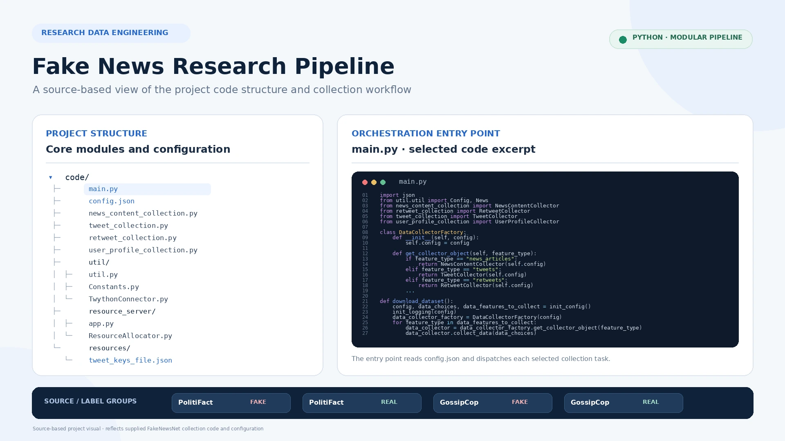

Research Data Engineering · Social Media Analytics
Fake News Research & Social Context Data Pipeline
A data collection and research foundation for studying fake and real news through article content and the social context in which news links are shared. The project brings together source-labelled news records, article extraction, tweet and retweet collection, and user-context data in a structured dataset.
Project Overview
The project is based on the FakeNewsNet data structure and its two source collections, PolitiFact and GossipCop. It organizes news samples using source-provided fake/real labels and connects each news item to article metadata and the tweet identifiers associated with its dissemination. The accompanying Python modules extend the collection workflow to article content, tweets, retweets, and user-level social context.
News content
Collecting article text and publication metadata from the source URLs, with structured JSON output for downstream analysis.
Social context
Connecting news items with tweets, retweets, author profiles, timelines, and network-related identifiers where collected.
Structured research data
Separating source and label splits and storing collected records in a predictable folder and JSON layout.
Dataset Snapshot
The four CSV files supplied with this project contain 23,196 news records across two sources and two source-provided label groups. These counts describe the uploaded CSV snapshot only; they are not counts of successfully downloaded articles, tweets, retweets, or unique social-media users.
| Source | Label in CSV | Records |
|---|---|---|
| GossipCop | Fake | 5,323 |
| GossipCop | Real | 16,817 |
| PolitiFact | Fake | 432 |
| PolitiFact | Real | 624 |
| Total | — | 23,196 |
Data Collection Workflow
A configuration-driven collector selects the source/label splits and the data dimensions to collect. A factory in main.py routes each requested feature to its corresponding collector module. The workflow supports parallel collection and writes collected artifacts into a source- and label-organized directory structure.
Fake / Real
News ID, URL, title, tweet IDs
Collector factory
Multiprocessing orchestration
Tweet / retweet JSON
User-context JSON folders
Collection Components
The supplied code separates each collection task into a dedicated module, making the data acquisition process easier to configure and inspect.
01 · News article extraction
The article collector uses newspaper3k to retrieve and parse content from each news URL.
- Article body text, headline, images, and top image.
- Authors, keywords, summary, canonical URL, and source metadata.
- Publication date when available.
- Archive lookup fallback when the original page cannot be fetched.
02 · Tweet collection
The tweet collector reads the tab-separated tweet identifiers associated with each news record and requests tweet objects through Twython.
- Processes tweet IDs in chunks of up to 100.
- Requests tweet objects with entity information.
- Stores retrieved tweet objects as JSON under the related news item.
03 · Retweet collection
A separate collector retrieves retweet information for the source tweets and stores it alongside the corresponding news record.
- Retweet retrieval is handled as an independent collection stage.
- Outputs are stored in dedicated retweet folders.
- API exceptions are logged for troubleshooting.
04 · User and network context
User-level collection modules use the authors of collected tweets to identify related social-context records.
- User profile information.
- Up to 200 recent timeline posts where returned by the API.
- Follower and following identifier collections.
- Shared user-context folders across the selected source/label groups.
Collection Orchestration & Reliability
Configuration-driven runs
config.json controls the dataset directory, output location, selected source/label combinations, requested data dimensions, and process configuration.
Parallel data collection
The utility layer uses Python multiprocessing to process collection jobs concurrently and report progress through tqdm.
API access coordination
A small Flask service and a resource-allocation component coordinate access to configured Twitter API connections across worker processes, helping manage rate-limit windows.
Logs and recoverable outputs
Collection activity is logged, and article, tweet, retweet, and user records are written as separate files so individual stages can be inspected.
Data Structure & Research Dimensions
The project organizes records around each news item and keeps the collected dimensions distinct. This structure supports later analysis of article content alongside the social activity associated with its circulation.
Source metadata
The provided CSV schema contains id, news_url, title, and tweet_ids. Each row identifies a news item and the tweet IDs associated with links to that item.
Parsed publisher content
Article-level JSON can include extracted text, images, publication date, title, authors, keywords, canonical link, source, and summary, depending on what the publisher page makes available.
Sharing and user activity
Tweet objects, retweets, user profiles, timeline posts, and follower/following identifiers are collected into separate folders linked back to the source news items or user IDs.
My Technical Focus
The project folder demonstrates an engineering workflow around acquiring and organizing multi-source research data, including:
Fake-news research needs more than a headline and a binary label. The supplied collection workflow brings article-level content together with the sharing activity and user context associated with news items, creating a richer data foundation for later analysis. The data pipeline itself does not determine whether a claim is true; it organizes source-labelled research records for subsequent investigation.
Scope of the Shared Project Files
The files supplied for this portfolio page document dataset configuration, article/tweet/retweet/user-context collection, and the four source CSV files. They do not include a fake-news classifier training script, model weights, a model evaluation report, or verified accuracy/F1 results. For that reason, this page presents the data collection and research foundation only and does not claim that a predictive model was trained or deployed. The FakeNewsNet project documentation also notes that the complete dataset cannot be redistributed in full because of Twitter privacy policies and publisher copyright restrictions.
Related Research & Dataset References
This project is connected to my research on fake-news detection using social and user-profile signals. The publication below describes the research approach; the supplied project folder separately documents the FakeNewsNet data-collection workflow.
My Peer-Reviewed Publication
Fake News Detection Based on Social Features by Ordered Weighted Averaging Fusion
Mehdi Salkhordeh Haghighi and Nasim Eshaghian (2020).
International Journal of Information and Communication Technology Research, 12(4), 46–59.
FakeNewsNet: A Data Repository with News Content, Social Context and Dynamic Information for Studying Fake News on Social Media
Kai Shu, Deepak Mahudeswaran, Suhang Wang, Dongwon Lee, and Huan Liu (2018).
Additional background: Fake News Detection on Social Media: A Data Mining Perspective.